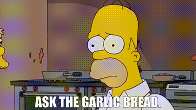
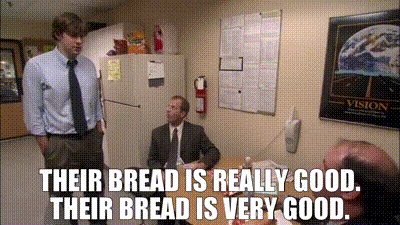

Garlic Bread Recipe

Description
Slice it and pull it with all the cheese flavor and goodness in every piece. This cheesy garlic bread will be gone in minutes and taste AMAZING warm. This is one of our favorite garlic breads to make and so simple to put together. It is full of cheese and one of the BEST breads out there.
Ingredients
- French Bread: I like the kind from the grocery store bakery that has the fresh bread ready to purchase. Cut in half long ways for the bread to be showing.
- Butter: Salted and softened to spread over top the bread halves.
- Garlic Powder: Adds a blend of garlic flavoring in the butter spread.
- Garlic cloves: Cloves of minced garlic adds a little bit of texture and adds to the butter and cheese.
- Italian seasoning: Every garlic bread needs Italian seasoning. It has the perfect combination of seasons all in one bottle.
- Colby Jack Cheese and Mozzarella Cheese: Melt the best under high temperature and also have that Italian cheese blend taste.
- Parsley: Chopped for garnish for color and flavor!
Steps
- Prepare bread: Preheat oven to 400 degrees. Cut your French bread loaf lengthwise and place on top of a baking sheet.
- Combine butter spread: In a small bowl combine softened butter, garlic powder, minced garlic, Italian seasoning and shredded cheese.
- Butter and cheese: Spread evenly on each side of the garlic bread. Top with Colby and mozzarella cheese.
- Bake cheesy garlic bread: Bake in the oven for 12-15 minutes until butter is melted and bubbly.
Enjoy!
